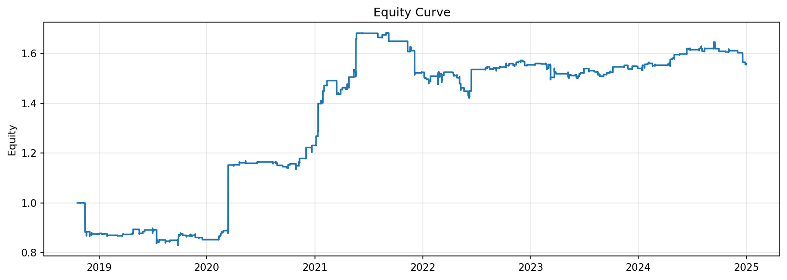
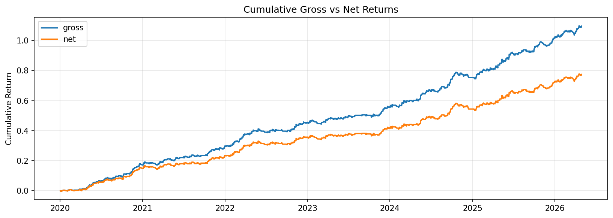
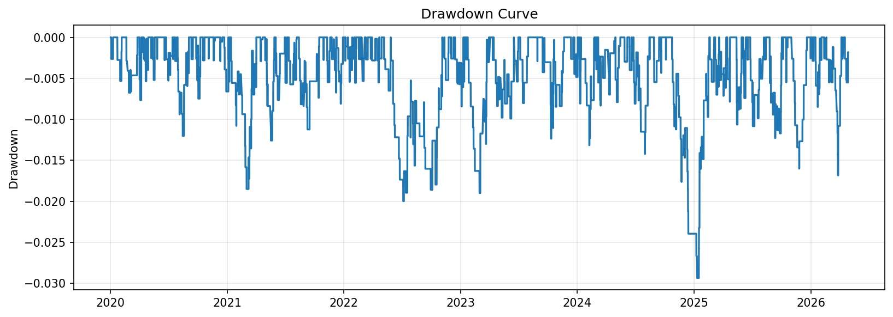
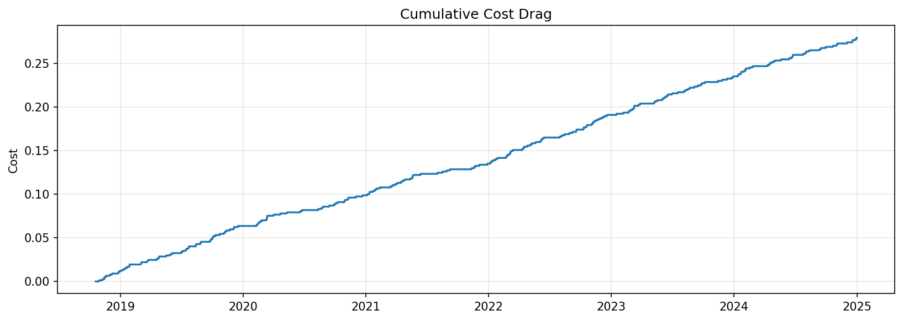
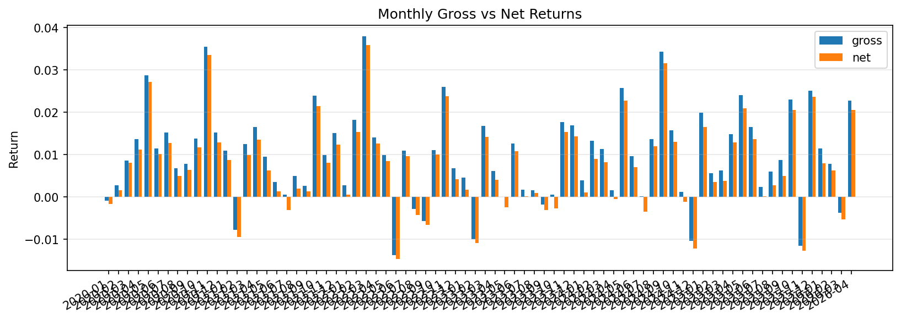
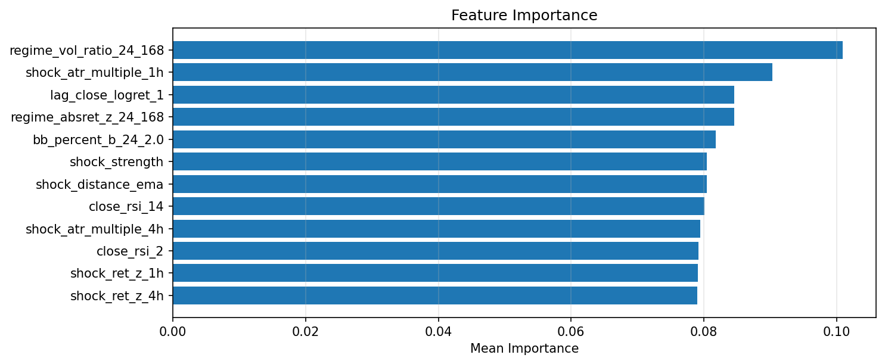
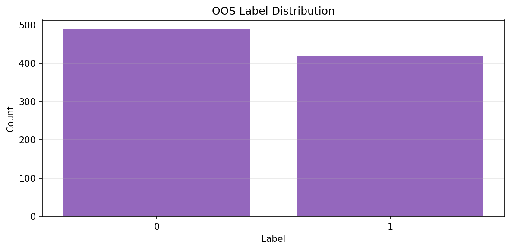
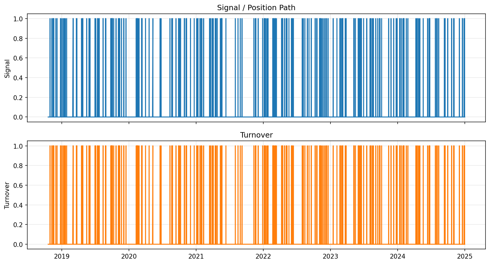
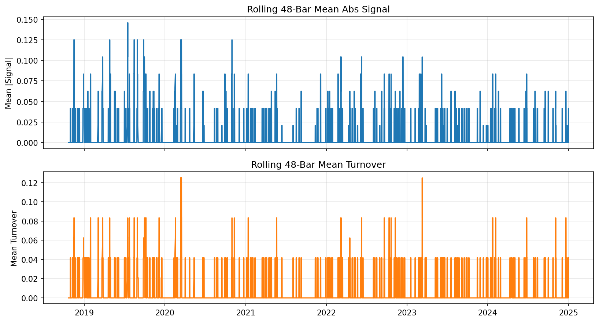

Quant Research / ML Engineering
Systematic Trading Framework
Python | ML | Backtesting | Quant
A research-first framework for systematic trading experiments, designed around modular features, models, experiments, risk, signals, portfolio construction, monitoring, and execution layers.
Project Summary
A modular research pipeline for time-aware strategy evaluation.
The framework is built for hypothesis-driven quantitative research: feature engineering, labeling, model experimentation, backtesting, transaction-cost handling, risk logic, signal generation, and portfolio construction are separated into explicit layers.
The experiment shown here is a BTCUSD 1H long-only workflow using a shock meta XGBoost setup. The plots are generated report artifacts used to review performance, drawdown, transaction-cost drag, model drivers, signal behavior, and label balance.
Results
Performance, risk, and cost behavior
The first group of charts focuses on equity progression, gross versus net returns, drawdown behavior, and the cumulative impact of costs.





Diagnostics
Model drivers, labels, and trading behavior
Diagnostics focus on whether the experiment is interpretable enough to review: feature importance, out-of-sample label balance, signal turnover, and rolling behavior are treated as part of the research artifact, not as afterthoughts.




Implementation
Design decisions emphasized by the framework.
- Modular layers for features, models, experiments, backtesting, risk, signals, portfolio construction, monitoring, and execution.
- Time-aware evaluation with walk-forward logic, out-of-sample testing, purged split support, and transaction-cost-aware backtesting.
- Unified experimentation workflow for statistical models, machine learning models, deep learning architectures, and reinforcement learning agents.
- Research artifacts designed to make model behavior, risk, costs, and signal quality reviewable before treating results as meaningful.
Repository
Project source and portfolio navigation
This page summarizes one experiment report from the broader framework. The charts are project artifacts, not investment advice.